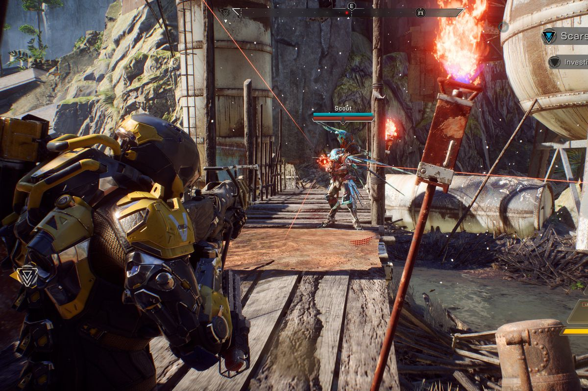

socially unredeeming
Better Late than Never? I think so.
The room is dark and somewhat damp. There’s a smell that’s almost palpable. You’re alone and terrified - everything you’ve worked so hard for could all be stripped away from you in one fell swoop. There’s a screen in front of you - it reads “Saving Progress… do not power off console” and the backsplash is the normally comforting emblem for Elder Scrolls: Morrowind. The progress bar seems to have stalled, hiccuped, crashed. Please game, don’t lock up mid-save, I beg of you. And then, it happens, the bar fills and you’re returned to play. That was a close one…
Read more...If that sounded at all familiar, then I know your pain. Morrwind was certainly not the only console game infested with fatal errors and bugs, but it is the one that stands out to me the most. That was the way of the world, though, before internet speeds caught up with technology and became readily available and before the latest rounds of consoles were released. It used to be if the game you purchased had issues, it always had issues, especially on the original Xbox and especially with games ported over from another platform. Additionally, game release delays were all too common during that period as developers did have to spend extra time bug testing, etc. Thankfully, with the release of the Xbox 360 and the PS3, small patches and extra downloadable content (DLC) was introduced to the console community, but there still didn’t seem to be a great mechanic for overhauling huge issues with games. Now, with the Xbox One and the PS4, nothing is not fixable, if the developer cares enough to do so. With the aforementioned memory in mind, I do wonder then why I was so resistant to the idea of an online-only Xbox, back when they originally announced it. Perhaps it’s been my experiences with the console or perhaps I’ve grown as a person, but now, my attitude toward the idea is closer to “well, I don’t want to have to put a disc in anyway”. That said, there are still good arguments for hard copy games and offline modes, so I’ll abstain from that argument for now.
The notion of an online-only console aside, there are other trends which have followed high speed internet being ubiquitous. Seemingly, everything has DLCs and add-ons, which can be purchased at an additional cost, as well as immediate and almost never-ending patches to fix bugs, errors, and even gameplay design. This has prompted some to argue that developers don’t feel the need to finish games and, anymore, you’re shelling out at least $60 for unfinished products. That’s actually all true; however, I think it’s a bit more nuanced than they imply. You may have to suffer through more bugs at first, and perhaps that’s because they didn’t spend enough time in the QA process, but what you don’t get up front, you certainly get in spades on the back end. Yes, you’re purchasing an unfinished game, but you’re also getting free support, patches, fixes, and updates to make up for it. I understand the frustration many experience due to this, but it might be better to take more of a “macro” approach to the situation. Is it preferable to have a mostly finished game, like Morrowind, which cannot be patched and you just have to live with or a game that has more issues at first but is eventually bug-free? I, personally, would choose the latter any day.
No game fits this argument, at least no game recently, more so than BioWare/EA’s Anthem. The game is riddled with bugs and can be very frustrating, at times, to play; however, as the days pass, the game plays better and better and, I will point out, the majority of the bugs were experienced by BETA and early access testers who were warned the game would change. Regardless of that, the game has been torched by the critics and the community, despite the fact that it appears a never-ending stream of players are still playing it. As I noted, I agree that the game is buggy and frustrating, but when you look past that, you have a gorgeous game with enthralling gameplay - once they work out the bugs, it will be quite the triumph. Could the developers have found and eliminating all of these bugs beforehand, though? Sure, but they would have had to delay the release over and over and over again, as I mentioned above, and even then, it still probably would have had issues. To put a finer point on it, I believe the developers know that they will lose some people with the needed patches and the addition of DLCs, etc, but they used to lose people due to release delays as well. My guess is, after any cost/gains analysis, they determine that since they would lose people with a delay anyway, it’s cheaper to let the user polish test the game. At least some developers make it up to the fans by making gameplay changes on request as other patches are being applied. Before I end my thoughts on this, as it pertains to Anthem, I will point out that I’m not including the users who have PS4 issues; wherein, the game is altering the console’s OS code, or whatever it is that’s happening - I don’t think there’s really any defense for that.
Although there is no perfect scenario in my arguments above, I do think users would be better served maintaining perspective, as it pertains to the state of gaming right now. I agree that developers should strive to have a more complete product at launch; however, I’d still rather deal with patches than fatal, unfixable, game-breaking errors.
Mini Rant
At some point, I fully plan to post mini rants in this space. At this point in time; however, I am focusing on building the site and trying to foster interest to contribute from others. So, if you're reading this, keep in mind that I'd be more than happy to share your party stories, blogs, mini rants, or comics. Simply email me your material at Socially.Unredeeming.Stories@gmail.com, include your desired real or pen name, and let me know if you'd like the content posted as-is or if you'd like me to edit the content for publication.